NTT DATA TECHのフィード
https://zenn.dev/p/nttdata_tech
NTT DATA公式アカウントです。 技術を愛するNTT DATAの技術者が、気軽に楽しく発信していきます。 当社のサービスなどについてのお問い合わせは、 お問い合わせフォーム https://nttdata.com/jp/ja/contact-us/ へお願いします。
フィード
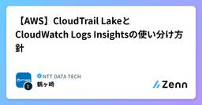
【AWS】CloudTrail LakeとCloudWatch Logs Insightsの使い分け方針
NTT DATA TECHのフィード
0.はじめにNTTデータの鶴ヶ崎です。公共分野の技術戦略組織に所属しており、普段はクラウド（主にAmazon Web Services（AWS））を用いたシステム構築等を行っています。今回は、以下2つを使っていて違いが分からなかったので比較と、使い分け方針を検討してみようと思います。CloudTrail LakeCloudTrailログが連携されたCloudWatch Logs Insights 1.CloudTrail LakeとはCloudTrail Lakeとは、監査/セキュリティ調査/運用上のトラブルシューティングのために、AWS CloudTrail ...
2日前
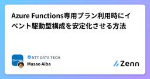
Azure Functions専用プラン利用時にイベント駆動型構成を安定化させる方法
NTT DATA TECHのフィード
はじめにAzure Functionsを専用（App Service）プランで運用する際、「コードは正しいはずなのに、なぜか特定の条件下でイベントが検知されない」といった現象に遭遇することがあります。これは故障や不具合ではなく、選択したホスティングプランの「仕様」が大きく関係しています。本記事では、Event Hubsトリガーなどを利用したサーバーレス構成において、安定したイベント処理を実現するために不可欠な 「プロセスのアイドル化」の仕組みと、その対策である 「Always On（常時接続）」設定について詳しく解説します。設計段階でこれらを押さえておくことで、思わぬ挙動に悩...
2日前
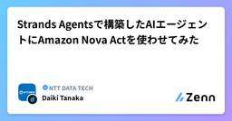
Strands Agentsで構築したAIエージェントにAmazon Nova Actを使わせてみた
NTT DATA TECHのフィード
1. はじめに昨今、生成AIの進歩が加速しており、Web検索や調査に生成AIを利用することは日常では最早当たり前の光景となっています。Web検索はChatGPTをはじめ、多くの生成AIツールで利用できる機能です。一方、ブラウザやWebサイト操作については、あらかじめユーザーが設定した操作を実行させるRPAツールやHTML構造を解析して情報を取得するスクレイピングツールが主流となっています。定型的な作業であれば、RPAツールやスクレイピングツールを利用すれば一見問題なさそうに見えます。しかし、Webページの構造は変化する可能性があり、変化した際はその都度設定を変更する必要があります。...
3日前
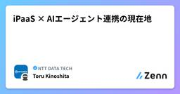
iPaaS × AIエージェント連携の現在地
NTT DATA TECHのフィード
はじめに：AIと業務システムをどうつなぐか生成AIやAIエージェントの活用が進む一方で、「AIを業務システムとどう連携させるか」は、依然として難しいテーマです。単にチャットベースでLLMに問い合わせるだけでなく、AIエージェントが業務データを参照し、判断し、自律的に成果物を生成するためには、AIと既存システムの間に適切な接続構造が必要になります。iPaaSである MuleSoft は、従来からシステム間連携の基盤として利用されてきましたが、近年は生成AIとの連携を意識した機能拡張が進んでいます。本記事では、その一つである MCP（Model Context Protocol） ...
3日前
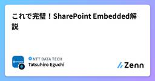
これで完璧！SharePoint Embedded解説
NTT DATA TECHのフィード
SharePoint Embedded解説（いつ・どうやって使うか）この記事についてSharePoint Embeddedは日本語・英語ともにWeb上の情報が少なく、公式ドキュメントを読んでも「結局何が嬉しいの？」「どう始めればいいの？」と感じた方も多いはずです。この記事では SharePointとの違い・使うべき場面・構築手順 を一気通貫で解説します。 目次SharePoint Embedded とは通常の SharePoint との違いSharePoint Embedded を選ぶ理由構築手順まとめ 1. SharePoint Embedd...
3日前
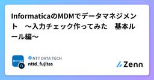
InformaticaのMDMでデータマネジメント 〜入力チェック作ってみた 基本ルール編〜
NTT DATA TECHのフィード
はじめにInformatica（インフォマティカ） のクラウドデータマネジメントプラットフォーム「Intelligent Data Management Cloud」（※１）上でSaaSとして提供される Multidomain MDM SaaS というマスターデータ管理ソリューションがあります。（※２）※１：Intelligent Data Management Cloud略称はIDMC。旧称はIICS。※２：Multidomain MDM SaaSMultidomain MDMは様々なドメインに適用可能な汎用的なもので、他にも「Customer 360」、「Suppli...
3日前
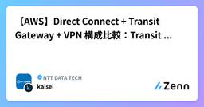
【AWS】Direct Connect + Transit Gateway + VPN 構成比較：Transit VIF だけじゃない？
NTT DATA TECHのフィード
1. はじめにAmazon Web Services（AWS）でハイブリッドネットワークを設計する際、Direct Connect + Transit Gateway + Site-to-Site VPN という構成が採用されることがあります。金融・公共系のシステムでセキュリティ要件が厳格で、専用線でかつ暗号化が必須といった場合などです。このとき、多くの方が「Transit Gatewayを使うならTransit VIFを使う」と自然に考えるのではないでしょうか。しかしSite-to-Site VPNを構築する場合には、実はPublic VIFを使ってTransit...
3日前
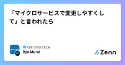
「マイクロサービスで変更しやすくして」と言われたら 1
1
NTT DATA TECHのフィード
1. マイクロサービスアーキテクチャでの変更容易性マイクロサービスアーキテクチャ（MSA）がよく聞かれるようになり、「それで変更しやすくなるんでしょ？」という期待も一緒に耳にします。ただし、MSAは何かインストールしたら実現されるような技術や製品ではありません。分割・デプロイ（リリース）・運用・体制などの組み合わせで実現するもので、狙った効果を得るには守るべき条件がいくつもあります。本記事では、MSAを変更容易性の観点でひも解いて、MSAの何がそれに効くのか、そのためにすべきことを考えてみたいと思います。まず一般的に、MSAの変更容易性や開発サイクルの改善が語られるときには...
4日前
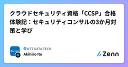
クラウドセキュリティ資格「CCSP」合格体験記：セキュリティコンサルの3か月対策と学び
NTT DATA TECHのフィード
1. はじめにCCSP（Certified Cloud Security Professional）とは、ISC2が認定する国際的なクラウドセキュリティ資格です。クラウドセキュリティに関するアーキテクチャ、データセキュリティ、インフラ／アプリケーション、運用、ガバナンスといった領域を、特定ベンダーに依存せず横断的かつ体系的に扱う点が特徴です。私は約3か月の試験対策を行い、2025年10月にCCSPに合格しました。本記事では、取得するメリット、試験対策、受験を通じて感じたことなどを、セキュリティコンサルタントの視点でまとめます。 2. 想定読者本記事の読者としては、以下の...
4日前
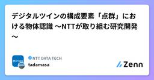
デジタルツインの構成要素「点群」における物体認識 ～NTTが取り組む研究開発～
NTT DATA TECHのフィード
はじめにNTTデータグループでは、デジタルツインのシステムを設計・構築・活用するノウハウや、各種データ処理ツールを強みに、お客さまの課題を解決し、効率や収益性を高めるデジタルツインサービスを提供しています。デジタルツインは目的に応じて多様なデータ・機能から構築されます。本記事ではデジタルツインを構成する重要な要素である「点群」に着目し、点群を用いた物体認識技術と、その取り組みにおけるNTTの研究成果を紹介します！ デジタルツインにおける点群の役割そもそも皆さまは「点群」をご存知でしょうか。点群とは、LiDAR（Light Detection And Ranging）やレー...
4日前
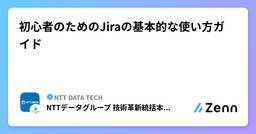
初心者のためのJiraの基本的な使い方ガイド
NTT DATA TECHのフィード
本ブログについて 本ブログの目的本ブログはアジャイル型開発におけるJira利用方法の一例を提示することで、Jira導入時や利用時の立ち上がりをスムーズに行えるようにすることを目的にしている。本ブログに沿ったJira運用を行うことで後述するプロジェクトにおける品質保証におけるメトリクスやDevOps実践におけるメトリクスを取得することができるようになる。なお、本ブログは2025年12月時点のJira Software Cloudを対象としている。また、あくまでも一例であるため、チームの状況に応じて適宜カスタマイズして利用することを推奨する。 本ブログの想定読者本ブログの...
4日前
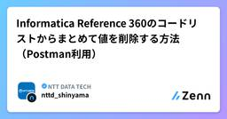
Informatica Reference 360のコードリストからまとめて値を削除する方法（Postman利用）
NTT DATA TECHのフィード
はじめに 本記事のテーマ今回は、Postmanを使ってAPI実行で手軽にInformatica Reference 360のコードリストからまとめて値を削除する方法をご紹介します。紹介するPostmanのコレクションを利用することで、REST APIを通じてInformatica Reference 360のコードリストの値を一括削除できます。!【補足】参照データ、コードリストとは参照データとは、「マスタデータが参照するマスタデータ」を指します。下記2点の特徴でマスタデータと区別します。「更新頻度が低い（ほぼ想定無し）」「総レコード数が少ない」コードリストと...
4日前
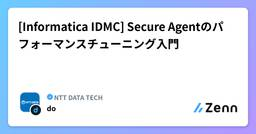
[Informatica IDMC] Secure Agentのパフォーマンスチューニング入門
NTT DATA TECHのフィード
はじめに前回の記事「[Informatica IDMC] Secure Agentグループの負荷分散の仕組みと設計の基本」では、Secure Agentグループの負荷分散の仕組みと設計の基本を解説しました。複数のSecure Agentをグループにまとめることで、タスクの負荷分散やワークロードの分離が実現できることを確認しました。しかし、パフォーマンスの観点を考慮するとそれだけでは設計は終わりません。1台のSecure Agent自体の処理能力を最大限に引き出すチューニングも同じくらい重要です。デフォルト設定のままでは、高スペックなマシンを用意しても、そのリソースの大半が使われな...
5日前
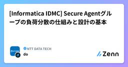
[Informatica IDMC] Secure Agentグループの負荷分散の仕組みと設計の基本
NTT DATA TECHのフィード
はじめにInformaticaのIDMC（Intelligent Data Management Cloud）を使い始めてしばらくすると、タスクの数が増え、1台のSecure Agentでは処理が追いつかない場面に直面することがあります。「もっとタスクを並列で動かしたい」「部門ごとにリソースを分けたい」「特定用途のジョブが他のジョブに干渉して困る」こうした課題を解決するのが、Secure Agentグループの仕組みです。本記事では、IDMCにおけるSecure Agentグループの負荷分散がどのように動作するのか、そしてグループ設計はどう考えるのかを公式ドキュメントを確認...
5日前
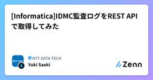
[Informatica]IDMC監査ログをREST APIで取得してみた
NTT DATA TECHのフィード
はじめにInformatica Intelligent Data Management Cloud（IDMC）はGUIから各種ログの参照が可能ですが、表示件数や検索期間には制約があり、長期保管や大量ログの横断分析には向いていません。そのため、ログを「データとして管理する」仕組みとして、REST APIを活用した自動取得・外部保管の設計が有効です。監査・セキュリティ・自動化運用の観点では、特に以下のようなユースケースが考えられます。長期（例：数年単位）でのログ保管が求められる場合内部統制や外部監査で過去ログの提示が必要な場合横断検索や分析用途でログをデータとして活用したい...
5日前
Figma MCP × GitHub CopilotでReact UI実装してわかった実践Tips
NTT DATA TECHのフィード
はじめにFigmaのデザインデータをもとにUIを実装する際、「デザインの読み取り」と「コードへの落とし込み」に時間がかかることはありませんか？本記事では、Figma MCP（Model Context Protocol）とGitHub Copilotを組み合わせてReactでUI実装を行った際の工夫点や注意点をまとめます。 Figma MCPとはFigma MCP（Model Context Protocol）は、Figmaのデザイン情報を構造化データとしてLLMに渡すための仕組みです。Figma MCPサーバーのガイド – Figma Learn - ヘルプセンター...
5日前
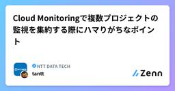
Cloud Monitoringで複数プロジェクトの監視を集約する際にハマりがちなポイント
NTT DATA TECHのフィード
はじめにGoogle CloudのCloud Monitoringは、アプリケーションや各種Google Cloudサービスの健全性やパフォーマンスを可視化し、アラート通知やデータ分析を行える監視サービスです。先日、Google CloudのCloud Monitoringを使って複数プロジェクトの監視を集約しました。本記事では、その際に起きた問題と解決策を紹介します。 構成について先に、Cloud Monitoring周りの設計について簡単に紹介したいと思います。監視方針として、ログや監視指標が取得可能なGoogle Cloudサービスについて、リソース監視とログ監視...
5日前
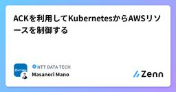
ACKを利用してKubernetesからAWSリソースを制御する
NTT DATA TECHのフィード
2025年11月にAmazon Web Services (AWS) のコンテナオーケストレータ Amazon Elastic Kubernetes Service (EKS) の新機能として、EKS Capabilitiesが発表されました。https://aws.amazon.com/jp/about-aws/whats-new/2025/11/amazon-eks-capabilities/本記事では、EKS Capabilitiesで提供されている機能の一つであるAWS Controllers for Kubernetes (ACK) を導入し、その動作を確認してみます。...
5日前
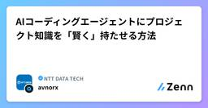
AIコーディングエージェントにプロジェクト知識を「賢く」持たせる方法 1
NTT DATA TECHのフィード
はじめにAI コーディングエージェントを使っていると、こんな経験はないでしょうか。汎用的な回答しか返ってこないプロジェクト固有の用語・設計ルールが伝わっていない毎回「うちのプロジェクトはこういう仕組みで…」と前置きが必要エージェントの出力品質は、モデルの性能だけでなく「何を渡すか」に大きく左右されます。本記事では「コンテキスト設計」の考え方と実践アプローチを紹介します。 課題：情報の渡し方がうまくいかない理由プロジェクト知識をエージェントに渡す方法はいくつかありますが、それぞれに注意点があります。方法注意点全ドキュメントを読ませる情報量が多...
5日前
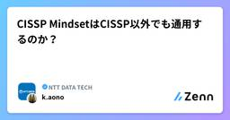
CISSP MindsetはCISSP以外でも通用するのか？
NTT DATA TECHのフィード
はじめに"CISSP Mindset"、あるいは"CISSP的な考え方"と呼ばれるこの概念。名前からしてCISSPにしか通用しないような印象を受けますが、実は他の資格にも応用が利くとしたら習得する価値は更に上がるのではないでしょうか。本稿ではCISSP Mindsetの応用性について皆さまにお伝えしたいと思います。 CISSP Mindsetとは何なのか一言で表すと"セキュリティ技術者ではなく、セキュリティ責任者としての思考法"と言えます。前回の記事でお伝えした通り、本番試験では初見力(未知の問題に対して、知識を組み合わせて論理的に解答を導き出す力)が必要なのですが、...
5日前